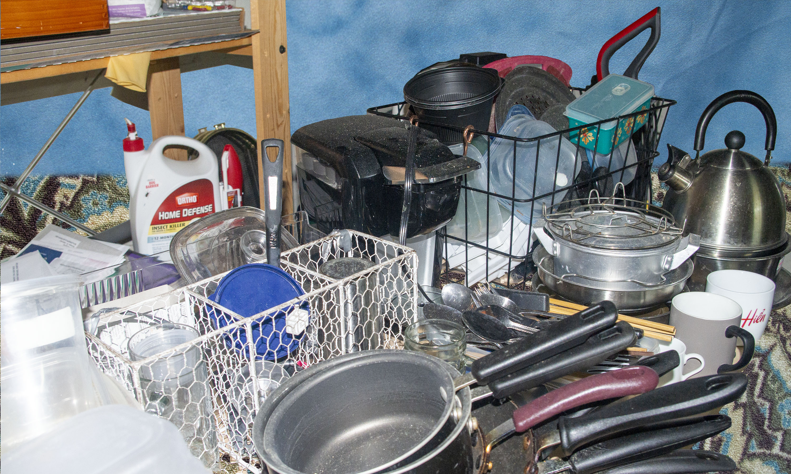

Here in Basement, it is too cold and dark for civilization, but there do lie what’s known as The Ancient Ruins of Residents Past. There are two theories about these ruins, though they have been there so long that there is no documentation of their true origin. The first theory is that the Ancient Residents once lived there in a time before the climate made it uninhabitable. The other theory is that long ago, some civilization used the land of Basement as a dumping ground for waste. Whatever the case, all things of value have been taken by “grave robbers” and what remains is generally unwanted junk that is better off left on Basement.